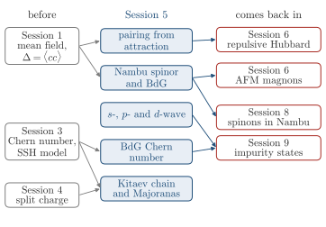

Advanced Quantum Materials 2027 · All lectures · Lecture notes
Session 5. Superconductivity, Nambu Representation and Majorana Physics
Video lecture · Landscape lecture · session5.ipynb · PDF of the notes
In this session we need three things from before. The first is mean-field theory, which we built in Section 1.12 and applied in Section 1.15 to a superconductor. There we took the expectation value of two annihilation operators, which is the pairing order \(\Delta = \langle c_i c_j\rangle\) of equation (1.9). This term gets a phase \(e^{2i\varphi}\) under the gauge transformation (1.10), while every ordinary bilinear term stays invariant, so a superconductor breaks gauge symmetry and has no fixed electron number. The second is the topology of bands from Session 3, with the Chern number (3.4), the bulk-boundary correspondence of Section 3.7 and the SSH model of Section 3.9. The third is the fractionalization of Section 4.18, where the correlations in a partially filled topological flat band split the charge of the electron and make its statistics anyonic.
In this session we will see a second way to split an electron, which is pairing. Superconductors and fractional quantum Hall states both host fractional excitations, but through opposite mechanisms. A superconductor has a mean-field description and needs an attractive interaction, while a fractional quantum Hall state has no mean-field description and needs a strong repulsive interaction. First, we will build the Nambu spinor, since without it we cannot diagonalize a Hamiltonian that mixes creation and annihilation operators as a pairing term does. This gives the Bogoliubov-de Gennes Hamiltonian, which is the central object of the session. We will use it to classify superconducting order by symmetry, into singlet and triplet and into s-, p- and d-wave. Then we will see that two superconductors can have the same spectrum and still a different topology, which the Chern number of the BdG bands tells apart. We will follow this difference down to the Kitaev chain, which is the SSH model written with Majorana operators, and whose end modes are their own antiparticles. At the end we will ask what these Majorana modes can be used for, which is topological quantum computing.

The same Hubbard Hamiltonian gives, at the mean-field level, a superconductor for an attractive interaction and a magnet for a repulsive one. The magnet is where we go next.
- In Session 6 the repulsive side of the Hubbard model gives magnetism, with the Stoner threshold of Section 6.6, and the antiferromagnetic magnons of Section 6.15 need the same Bogoliubov transformation as the BdG Hamiltonian.
- In Section 8.6 the Nambu space and a BCS state of spinons give a first guess for a quantum spin liquid.
- In Section 9.7 and Section 9.8 impurities tell a conventional superconductor apart from a topological one.